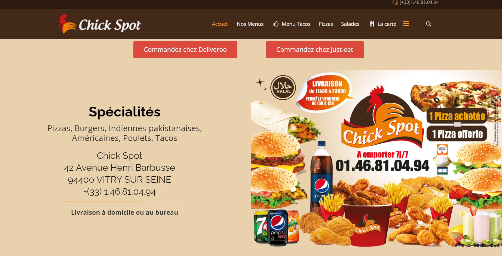

Présentation de Kaliam Food
Historique
Kaliam Food a été fondé par un entrepreneur motivé, prêt à investir et à déployer les moyens nécessaires pour lancer un restaurant prospère. Cette vision a permis de construire une base solide et de développer la marque.
Positives
- Contribution à l'insertion professionnelle : Chicken Spot offre des opportunités d'emploi accessibles, notamment pour les jeunes et les personnes en reconversion professionnelle.
Négatives
Négatives
- Consommation élevée de ressources : Les opérations quotidiennes, comme la cuisson et la réfrigération, entraînent une consommation importante d'énergie et d'eau, augmentant l'empreinte écologique.
Responsabilité Sociétale des Entreprises (RSE)
- Réduction des déchets et utilisation de matériaux recyclables : Engagement à minimiser l'impact environnemental en réduisant les déchets alimentaires et en utilisant des emballages biodégradables.
Orientations Stratégiques
- Partenariats renforcés avec des plateformes de livraison : Expansion des collaborations avec les services de livraison pour toucher plus de clients.
Analyse SWOT
Forces
Réputation solide dans le secteur du fast-food halal.
Faiblesses
Forte concurrence dans le secteur du poulet frit.
Opportunités
Expansion sur de nouveaux marchés et partenariats stratégiques.
Menaces
Concurrence accrue et dépendance technologique.
Mission et Projet
Dans le cadre de mon stage chez Kaliam Food, mes missions incluent la création d'un site vitrine pour l'entreprise, en utilisant WordPress. Ce site vise à présenter l’identité de Kaliam Food, ses valeurs, et ses services tout en offrant une plateforme accessible et engageante pour ses clients.
Le choix de WordPress permet de mettre en place une solution flexible et facilement gérable, avec une interface utilisateur intuitive qui simplifiera la gestion de contenu pour les futurs besoins de l’entreprise.

Retour à l'accueil
>